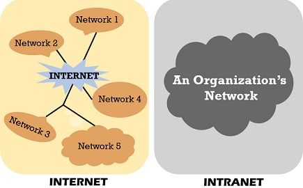

DEFINITION
An intranet is a private network contained within an organisation that uses the same technologies as the Internet — such as TCP/IP, HTTP, and HTML — but is accessible only to authorised members of that organisation such as employees or students.
How It Works
Intranets use the same protocols as the Internet but are restricted to authorised users within a company or institution. They typically host internal websites, document management systems, employee portals, HR systems, and communication tools like messaging and video conferencing.
Access to an intranet is controlled via firewalls that block outside traffic, and VPNs that allow authorised remote workers to connect securely. Employees log in with company credentials to access internal resources not available publicly.
Access Control
Only authorised users within the organisation can access the intranet.
Technology Used
Uses the same TCP/IP, HTTP, and HTML technologies as the public Internet.
Security
Protected by firewalls, VPNs, and user authentication systems.
Common Uses
HR portals, internal wikis, company news, file sharing, and team messaging.